<!doctype html public "-//w3c//dtd html 4.0 transitional//en">
<html>
<head><meta name="viewport" content="height=device-height,width=device-width">
   <meta http-equiv="Content-Type" content="text/html; charset=iso-8859-1">
   <meta name="Generator" content="Microsoft Word 97">
   <meta name="GENERATOR" content="Mozilla/4.73 [en] (WinNT; I) [Netscape]">
   <meta name="Author" content="Jeffrey Mishlove">
   <title>Extrasensory Perception (ESP), Science, The Roots of Consciousness</title>

<!-- google-analytics.com  START  (aync)-->
<script type="text/javascript">

  var _gaq = _gaq || [];
  _gaq.push(['_setAccount', 'UA-15825841-1']);
  _gaq.push(['_trackPageview']);

  (function() {
    var ga = document.createElement('script'); ga.type = 'text/javascript'; ga.async = true;
    ga.src = ('https:' == document.location.protocol ? 'https://ssl' : 'http://www') + '.google-analytics.com/ga.js';
    var s = document.getElementsByTagName('script')[0]; s.parentNode.insertBefore(ga, s);
  })();

</script>
<!-- google-analytics.com  END  -->

<!-- Histats.com  START  (aync)-->
<script type="text/javascript">var _Hasync= _Hasync|| [];
_Hasync.push(['Histats.start', '1,1087503,4,0,150,30,00000000']);
_Hasync.push(['Histats.fasi', '1']);
_Hasync.push(['Histats.track_hits', '']);
(function() {
    var hs = document.createElement('script'); hs.type = 'text/javascript'; hs.async = true;
    hs.src = ('http://s10.histats.com/js15_as.js');
    (document.getElementsByTagName('head')[0] || document.getElementsByTagName('body')[0]).appendChild(hs);
  })();</script>
<noscript><a href="http://www.histats.com" target="_blank"></a></noscript>
<!-- Histats.com  END  -->

</head>
<body>
&nbsp;
<center><table BORDER=0 COLS=1 WIDTH="600" >
<tr>
<td>
<center><font face="Arial,Helvetica"><font size=+2>Extrasensory Perception
(ESP)</font></font></center>

<p><b><font face="Arial,Helvetica">Introduction</font></b>
<p><font face="Arial,Helvetica">Although many of you reading this book,
like myself, have few personal doubts that something like extrasensory
perception is real, the effort to establish ESP as a scientific fact has
been a continuous struggle the outcome of which still remains uncertain.
Many subjects whose demonstrations had originally convinced researchers
from the British Society for Psychical Research were later detected using
bogus means to dupe these eminent scientists. Fascinated by their few successes,
researchers continued undaunted in the midst of failures, criticism, and
detected frauds.</font>
<br>&nbsp;
<p><b><font face="Arial,Helvetica"><a href="http://www.williamjames.com/bookstore.rhine.htm" >J.
B. Rhine</a>'s Early Research at Duke University</font></b>
<p><font face="Arial,Helvetica">Perhaps the most publicized early experiments
were those published by Dr. Joseph Banks Rhine in 1934 in a monograph entitled
<a href="http://www.williamjames.com/bookstore/rhine.htm" >Extra-Sensory
Perception</a>, which summarized results from his experiments at Duke University
beginning in 1927.&nbsp;</font>
<center>
<p>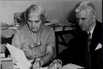
<br><b><font face="Arial,Helvetica"><font size=-1>Louisa and Joseph Banks
Rhine</font></font></b></center>

<p><font face="Arial,Helvetica">Although this work was published by the
relatively obscure Boston Society for Psychic Research, it was picked up
in the popular press and had a large impact throughout the world. While
earlier researches had been fruitful, they were generally neither as systematic
nor as persistent as Dr. Rhine's studies.</font>
<p><font face="Arial,Helvetica">These experiments used shuffled decks of
ESP cards with five sets of five different symbols on them -- a cross,
a circle, a wavy line, a square and a star. This method reduced the problem
of chance-expectation to a matter of exact calculations. Furthermore the
cards were designed to be as emotionally neutral as possible to eliminate
possible response biases caused by idiosyncratic preferences. However other
studies have shown that emotionally laden targets can also work without
impairing statistical analysis.</font>
<p><font face="Arial,Helvetica">Rhine describes his early work with one
of his more successful subjects, Hubert E. Pearce, a graduate divinity
student:</font>
<blockquote><font face="Arial,Helvetica">The working conditions were these:
observer and subject sat opposite each other at a table, on which lay about
a dozen packs of the Zener cards and a record book. One of the packs would
be handed to Pearce and he allowed to shuffle it. (He felt it gave more
real "contact.") Then it was laid down and it was cut by the observer.
Following this Pearce would, as a rule, pick up the pack, lift off the
top card, keeping both the pack and the removed card face down, and after
calling it, he would lay the card on the table, still face down. The observer
would record the call. Either after five calls or after twenty-five calls
-- and we used both conditions generally about equally -- the called cards
would be turned over and checked off against the calls recorded in the
book. The observer saw each card and checked each one personally, though
the subject was asked to help in checking by laying off the cards as checked.
There is no legerdemain by which an alert observer can be repeatedly deceived
at this simple task in his own laboratory. (And, of course, we are not
even dealing with amateur magicians.) For the next run another pack of
cards would be taken up.</font></blockquote>
<font face="Arial,Helvetica">The critical reader will find several faults
with this experiment. First, as long as the subject is able to see or touch
the backs or sides of the cards, there exists a channel of sensory leakage
through which the subject might receive information about the face of the
cards. Several critics reported that this was why they were able to obtain
good scoring results. Secondly, there was no adequate safeguards against
legerdemain. For example, what would prevent the subject from making small
markings on the cards with his fingernails in order tc identify the cards
later on? It almost seems as if the optimism of the experimenter could
mitigate against sufficiently careful observation.&nbsp;</font>
<p><font face="Arial,Helvetica">Furthermore, was it really possible for
one experimenter to maintain sufficient concentration to insure that the
subject does not cheat? Experience of other researchers has sadly shown
this is quite doubtful. Perhaps Rhine did utilize other safeguards. If
so he could be (and was) fairly criticized for not adequately reporting
his experimental conditions, although other experiments in his monograph
were admittedly better controlled. Finally, there was no mention of any
efforts to guard against recording errors on the part of the experimenter.
One can hardly expect the cooperation of the subject, who may have a personal
interest in the outcome, to be an adequate control against experimenter
mistakes.</font>
<p><font face="Arial,Helvetica">As Rhine's positive results gained more
attention, arguments of this sort began to proliferate in the popular and
scientific literature. It is much to Rhine's credit that he encouraged
such criticism and modified his experiments accordingly. In 1940, J. Gaither
Pratt, J. B. Rhine, and their associates published a work, titled <i>Extra-Sensory
Perception After Sixty Years</i>, which described the ways in which the
ESP experiments had met the thirty-five different counter-hypotheses that
had been published in the scientific and popular press.</font>
<p><font face="Arial,Helvetica">The areas of criticism Rhine and Pratt
focused on in 1940 included: hypotheses related to improper statistical
analysis of the results; hypotheses related to biased selection of experiments
reported; hypotheses dealing with errors in the experimental records; hypotheses
involving sensory leakage; hypotheses charging experimenter incompetence;
and finally hypotheses of a general speculative character. In each case,
Rhine and Pratt pointed to experimental evidence to counter the hypotheses.</font>
<p><font face="Arial,Helvetica">Many prominent mathematicians in the field
of probability who have made a detailed investigation have approved his
techniques. In fact, in 1937 the American Institute of Statistical Mathematics
issued a statement that Rhine's statistical procedures were not in the
least faulty. In most experiments, both significant and chance results
were reported and averaged into the data.</font>
<p><font face="Arial,Helvetica">Between 1880 and 1940, 145 empirical ESP
studies were published using 77,796 subjects who made 4,918,186 single
trial guesses. These experiments were mostly conducted by psychologists
and other scientists. In 106 such studies, the authors arrived at results
exceeding chance expectations.</font>
<p><font face="Arial,Helvetica">High scores due to inaccurate recording
of results had been reduced to an insignificant level by double-blind techniques
in which both subject and experimenter notations were made without knowledge
of the scores against which they were to be matched. Errors were further
reduced by having two or more experimenters oversee the matching of scores.
Furthermore, original experimental data had been saved and double checked
for mistakes many times by investigators. Tampering with these original
records was prevented by having several copies independently preserved.</font>
<p><font face="Arial,Helvetica">Sensory cues were impossible in many tests
of clairvoyance because the experimenter himself and all witnesses did
not know the correct targets. In other tests, the cards were sealed in
opaque envelopes, or an opaque screen prevented the subject from seeing
the cards. Often the experimenter and the subject were in completely different
rooms.</font>
<p><font face="Arial,Helvetica">Those who charged the experimenters with
incompetence failed to find any flaws in several experiments (although
rarely, if ever, are these early studies cited as evidential today, in
an era of stricter experimental controls). In cases of inadequate reporting,
Rhine indicated that further data would always be supplied upon request.
In several cases, experimenter fraud would have had to involve the active
collusion on the part of several teams of two or more experimenters. Critics
who claimed the results came only from the laboratories of those with a
predisposition to believe in ESP were also ignoring at least six successful
studies gathered from skeptical observers.</font>
<p><font face="Arial,Helvetica">Other criticisms generally claimed ESP
could not exist because of certain philosophical assumptions about the
nature of the universe or scientifically uninformed assumptions of what
ESP would be like if it did exist. Rhine argued fo&amp;#0;cefully that
such assumptions were scarcely sufficient cause to dismiss the carefully
observed experimental data.</font>
<p><font face="Arial,Helvetica">Of the 145 experiments reported in the
sixty year period from 1880 to 1940, Rhine and Pratt selected six different
experimental studies of ESP they believed were not amenable to explanation
by any of the counter-hypotheses offered by critics of psi research at
that time.</font>
<p><font face="Arial,Helvetica">One of the more carefully controlled studies
was the Pearce-Pratt series, carried out in 1933 with Dr. J. Gaither Pratt
as agent and Hubert Pearce as subject. In these experiments, the agent
and his subject were separated in different buildings over 100 yards apart.
Pratt displaced the cards one by one from an ESP pack at an agreed time
without turning them over. After going through the pack, Pratt then turned
the cards over and recorded them. The guesses were recorded independently
by Pearce. In order to eliminate the possibility of cheating, both placed
their records in a sealed package handed to Rhine before the two lists
were compared. Copies of these original records are still available for
inspection. The total number of guesses was 1,850 of which one would expect
one-fifth, or 370, to be correct by chance. The actual number of hits was
558. The probability these results could have occurred by chance is much
less than one in a hundred million.</font>
<br>&nbsp;
<p><b><font face="Arial,Helvetica">Criticisms of ESP Research</font></b>
<p><font face="Arial,Helvetica">After the publication of <i>ESP After Sixty
Years</i>, both the quality and quantity of criticism of ESP research declined
until the mid-1970s (when a new wave of still-ongoing criticism was launched
by the Committee for the Scientific Investigation of Claims of the Paranormal).
That is not to say, however, that psi research met with general acceptance
in the United States or in other countries. The work of the psi researchers
was simply ignored by many universities and the major scientific publications.
The public guardians were not then ready for ESP.</font>
<p><font face="Arial,Helvetica">In August 1955, <i>Science</i> carried
an editorial on ESP research by Dr. George R. Price, a chemist from the
University of Minnesota, stating that scientists had to choose between
accepting the reality of ESP or rejecting the evidence. Price had carefully
studied the data and he frankly admitted the best experiments could only
be faulted by assuming deliberate fraud, or an abnormal mental condition,
on the part of the scientists. Price felt that ESP, judged in the light
of the accepted principles of modern science, would have to be classed
as a miracle (this judgment, as we will point out later, is ill founded).
Rather than accept a miracle, he suggested accepting the position of the
eighteenth-century philosopher, David Hume, who said those who report miracles
should be dismissed as liars.</font>
<p><font face="Arial,Helvetica">Similar criticisms were published by Professor
C. E. M. Hansel. Regarding the Pearce-Pratt experiment, he suggests that
after Pratt had left him, Pearce departed from the University Library,
followed Pratt to his office and looked through the fanlight of Pratt's
door thus observing the target cards being recorded by Pratt. While it
is true Hansel exposed the defect in the experimental design of having
left Pearce alone in the library, the structure of Pratt's office would
have made it impossible for Pearce to see the cards even if he had taken
the great risk of staring through the fanlight of Dr. Pratt's door. In
subsequent experiments psi researchers have generally (but, inevitably,
not always) eliminated such defects.</font>
<p><font face="Arial,Helvetica">Official recognition of the experimental
competency of psi researchers did not come until December of 1969 when
the American Academy for the Advancement of Science granted affiliate status
to the researchers in the Parapsychological Association. Recent decades
have shown authoritative scientific voices displaying a new willingness
to deal with the evidence for ESP. In the "letters" column of <i>Science</i>
for January 28, 1972, there appeared a brief note from Dr. Price titled
"Apology to Rhine and Soal," in which Price expressed his conviction that
his original article was highly unfair to both S. G. Soal and J. B. Rhine.&nbsp;</font>
<p><font face="Arial,Helvetica">Ironically, Price's apology seventeen years
after his original editorial was partially premature. In 1978, psi researchers
found that S. G. Soal, a British mathematician who also reported significant
ESP results, had fraudulently manufactured his data.</font>
<p><font face="Arial,Helvetica">Other criticisms relating to repeatability,
fraud, statistical inferences, experimental design and interpretation of
data have continued. In fact, psi researchers closely scrutinize each other's
work and have often been their own most thorough critics (making it rather
easy for would-be debunkers to seize upon their criticisms as grounds for
discrediting the entire field). As a response to criticism psi researchers
have slowly, sometimes erratically and sometimes steadily, improved the
quality of their experiments while continuing to obtain data which they
believe is anomalous.&nbsp;</font>
<center>
<p>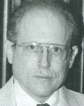
<br><b><font face="Arial,Helvetica"><font size=-1>John Palmer argues that,
while psychic researchers have not proven the</font></font></b>
<br><b><font face="Arial,Helvetica"><font size=-1>existence of psi, they
have established a scientific anomaly that cannot&nbsp;</font></font></b>
<br><b><font face="Arial,Helvetica"><font size=-1>be explained away by
skeptics.</font></font></b></center>

<p><font face="Arial,Helvetica">Some honest skeptics, meanwhile, while
contining to reject the psi hypothesis, reluctantly acknowledge that some
of the research deserves careful scrutiny from the mainstream scientific
community.</font>
<br>&nbsp;
<p><b><font face="Arial,Helvetica">Unconscious ESP</font></b>
<p><font face="Arial,Helvetica">One of the first theories about the nature
of ESP was put forward by Frederick Myers, author of the 1903 classic Human
Personality and Its Survival of Bodily Death, when he associated psychic
phenomena with the workings of the subliminal mind, below the limits of
consciousness. Studies in which ESP signals are registered by the body's
physiological processes even when the subject is unaware of the message
support the concept of unconscious ESP. For example, in a series of studies
conducted by E. Douglas Dean, subjects were hooked up to a plethysmograph.
Increases or decreases in blood and lymph volume, resulting from emotional
responses, are measured by this instrument.&nbsp;</font>
<center>
<p>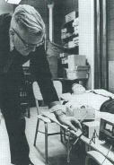
<br><b><font face="Arial,Helvetica"><font size=-1>E. Douglas Dean conducting
a plethysmograph study</font></font></b></center>

<p><font face="Arial,Helvetica">A telepathic agent in another room then
concentrated on different names, some of which were known to be emotionally
significant to the subjects. The results indicated changes in the blood
volume which significantly correlated with the emotionally laden target
messages. This finding was c</font>
<p><font face="Arial,Helvetica">Birmed in a second series of studies conducted
by Dean and Carroll B. Nash at St. Joseph's College in Philadelphia. Most
of the subjects were totally unaware of the changes in their blood supply
which were responding to the target material.</font>
<p><font face="Arial,Helvetica">A similar study was conducted by Charles
Tart in which subjects were hooked up to a plethysmograph, an electroencephalograph,
and a device for measuring galvanic skin response. The agent in this experiment
was periodically given a mild electric shock. The subjects did not know
they were being tested for ESP, but rather were told to guess when a "subliminal
stimulus" (sensory stimulation below the threshold of conscious awareness)
was being directed to them. The subjects' hunches failed to correlate to
this disguised target. However, their physiological measurements showed
abrupt changes when the shocks were administered to the agent in ano@&amp;#0;er
room.</font>
<br>&nbsp;
<p><b><font face="Arial,Helvetica">Dream Telepathy</font></b>
<p><font face="Arial,Helvetica">Frederick Myers noted in the early years
of psychical research that the workings of the subliminal mind were most
visible in such phenomena as dreams, trance states, hypnosis, and states
of creative inspiration. In fact, a large proportion of the reported cases
of ESP occurred while the percipient was in such altered states of consciousness.</font>
<p><font face="Arial,Helvetica">An important series of studies on the nature
of ESP in dreams was carried out by a team of researchers at Maimonides
Hospital in Brooklyn, New York. Using equipment which monitored brain waves
and eye movements, the investigators could determine accurately when subjects
were having dreams. By waking the subjects at these times they were then
able to obtain immediate reports of the dream contents. Earlier in the
day, in another room, the telepathic senders had concentrated on target
pictures designed to create a particular impression.</font>
<p><font face="Arial,Helvetica">Independent judges compared the similarity
subject's responses displayed to all of the actual targets in each series
and found evidence for nocturnal telepathy and precognition (when targets
were not chosen until the following day) of the actual targets used.,</font>
<p><font face="Arial,Helvetica">In addition to these careful experiments,
there were some interesting one-time studies. In one such test, telepathic
transmission was obtained by having about 2,000 persons attending a Grateful
Dead rock concert focus on a color slide projection image and attempt to
send it to the dream laboratory 45 miles away in Brooklyn. Many of these
individuals were in altered states of consciousness from the music and
the ingestion of psychedelic drugs. This test proved successful.</font>
<p><font face="Arial,Helvetica">Psychologist David Foulkes at the University
of Wyoming, in consultation with the Maimonides team, attempted unsuccessfully
to replicate the dream studies. Critic C. E. M. Hansel, a psychologist
at the University of Wales in England, attributed the failure to tighter
controls against fraud in the Wyoming experiments, whereas dream researcher
Robert Van de Castle from the University of Virginia, one of the subjects
in both the Wyoming and the Maimonides experiments, stressed the debilitating
effect of the skeptical attitude of the Wyoming team.</font>
<p><font face="Arial,Helvetica">In 1985, Yale University psychologist Irvin
Child published a review of the Maimonides dream studies in the American
Psychologist. Child's basic point was that this research was basically
sound.</font>
<center>
<p>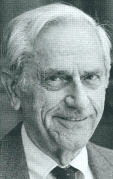
<br><b><font face="Arial,Helvetica"><font size=-1>Irvin L. Child, Professor
Emeritus of Psychology, Yale University</font></font></b></center>

<p><font face="Arial,Helvetica">The experiments have received little or
no mention in the pertinent psychological literature. When these studies
were reviewed, Child claims that they were so severely distorted as to
given an entirely erroneous impression of how they were conducted. Child
used the example of the dream research to illustrate the general point
that books by psychologists purporting to offer critical reviews of psi
research do not use the scientific standards of discourse prevalent in
psychology.&nbsp;</font>
<br>&nbsp;
<p><b><font face="Arial,Helvetica">Hypnosis and ESP</font></b>
<p><font face="Arial,Helvetica">Milan Ryzl, a chemist who defected to the
United States from Czechoslovakia in 1967, developed a hypnotic technique
for facilitating ESP which, although it has not been successfully replicated,
attracted attention and may yet prove fruitful. Ryzl's technique involved
the intensive use of deep hypnotic sessions almost daily for a period of
several months. The first stage of these sessions is to instill confidence
in his subjects that they could visualize clear mental images containing
accurate extrasensory information. Once this stage was reached, Ryzl concentrated
on conducting simple ESP tests with immediate feedback so that subjects
might learn to associate certain mental states with accurate psychic information.
Subjects were taught to reject mental images which were fuzzy or unclear.
This process, according to Ryzl, continued until the subject was able to
perceive clairvoyantly with accuracy and detail. Finally, Ryzl attempted
to wean the subject away from his own tutelage so that he or she could
function independently. While still in Czechoslovakia, Ryzl claimed to
have used this technique with some 500 individuals, fifty of whom supposedly
achieved success.</font>
<p><font face="Arial,Helvetica">Other studies have shown heightened ESP
in states of physical relaxation or in trance and hypnotic states.&nbsp;&nbsp;
In fact, the use of hypnosis to produce high ESP scores is one of the more
replicabIe procedures in psi research.&nbsp;</font>
<p><font face="Arial,Helvetica">A particularly notable series of experiments
were described in 1910 by EmilIe Boirac, rector of the Dijon Academy in
France, which produced what he described as an "externalization of sensitivity."
When the hypnotist placed something in his mouth, the subject could describe
it. If he pricked himself with a pin, the subject would feel the pain.
The most striking experiments were those in which the subject was told
to project his sensibility into a glass of water. If the water was pricked,
the subject would react by a visible jerk or exclamation.</font>
<center>
<p>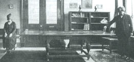
<br><b><font face="Arial,Helvetica"><font size=-1>"The Conductability of
Psychic Force." The two glasses were connected by a</font></font></b>
<br><b><font face="Arial,Helvetica"><font size=-1>copper wire. When the
experimenter pinched the air-zone above the water-glass</font></font></b>
<br><b><font face="Arial,Helvetica"><font size=-1>nearest him, or plunged
his finger or pencil into it, the subject immediately reacted.</font></font></b>
<br><b><font face="Arial,Helvetica"><font size=-1>This reaction disappeared
if the connection between the glasses was removed.&nbsp;&nbsp; These results
were undoubtedly shaped by the belief systems of the participants.</font></font></b></center>

<p><font face="Arial,Helvetica">This phenomenon has been repeated by the
Finnish psychologist, Jarl Fahler.</font>
<p><font face="Arial,Helvetica">In a similar experiment performed by one
of Boirac's associates, blisters were raised on the skin of a hypnotized
subject, simply by pricking a photograph of the subject's hand.</font>
<center>
<p>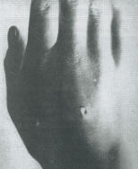
<br><b><font face="Arial,Helvetica"><font size=-1>"Exteriorization of Sensitiveness."
A photograph of the sensitive was taken and</font></font></b>
<br><b><font face="Arial,Helvetica"><font size=-1>the negative was then
held by her a few moments. The operator, with a pin, scratched</font></font></b>
<br><b><font face="Arial,Helvetica"><font size=-1>the hand on the negative.
Instantly the sensitive ejaculated with pain, and a small red</font></font></b>
<br><b><font face="Arial,Helvetica"><font size=-1>spot appeared on the
back of her hand. This rapidly grew into the blister shown in the</font></font></b>
<br><b><font face="Arial,Helvetica"><font size=-1>above photograph.</font></font></b></center>

<p><font face="Arial,Helvetica">Boirac, as well as Soviet investigators,
have reported the ability to induce a hypnotic trance simply through telepathic
concentration directed toward their subjects.,</font>
<p><font face="Arial,Helvetica">In 1969, Charles Honorton and Stanley Krippner
reviewed the experimental literature of studies designed to use hypnosis
to induce ESP. Of nineteen experiments reported, only seven failed to produce
significant results. Many of the studies produced astounding success. In
a particularly interesting precognition study, conducted by Fahler and
Osis with two hypnotized subjects, the task also included making confidence
calls -- predicting which guesses would be most accurate. The correlation
of confidence call hits produced impressive results with a probability
of 0.0000002.&nbsp;</font>
<p><font face="Arial,Helvetica">In 1984, Ephriam Schechter reported an
analysis of studies comparing the effect of hypnotic induction and nonhypnosis
control procedures on performance in ESP card-guessing tasks. There were
25 experiments by investigators in ten different laboratories. Consistently
superior ESP performance was found to occur in the hypnotic induction conditions
compared to the control conditions of these experiments.&nbsp;</font>
<p><font face="Arial,Helvetica">Hypnosis typically involves relaxation
and suggestion in an atmosphere of friendliness and trust. We do not know
which of these factors, or combination of factors, accounts for heightened
psi scores. Schechter himself, as well as other psi researchers, has been
reluctant to conclude that hypnosis does facilitate psi performance. He
noted that the studies were not designed to control for an expectancy effect.
In a retrospective critique of research on altered states of consciousness
and psi, St. Johns University psychologist Rex Stanford argued that many
alternative explanations of heightened psi effects were not controlled
for in the research studies. Stanford called for more rigorous process
oriented research to determine why hypnosis and other altered states enhance
psi scores -- if, in fact, they actually do.&nbsp;</font>
<br>&nbsp;
<p><b><font face="Arial,Helvetica">Exceptional ESP Laboratory Performers</font></b>
<center>
<p><font face="Arial,Helvetica">Pavel Stepanek</font></center>

<p><font face="Arial,Helvetica">Western researchers who travelled to Prague
to personally investigate Milan Ryzl's hypnotic training program were able
to test one of his better subjects, Pavel Stepanek. During a long period
of experimental investigations, Stepanek proved to be one of the most successful
subjects ever tested. More than twenty studies with him have now been published.</font>
<center>
<p>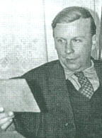
<br><b><font face="Arial,Helvetica"><font size=-1>Pavel Stepanek attempting
to read an ESP target&nbsp;</font></font></b>
<br><b><font face="Arial,Helvetica"><font size=-1>inside a triple-sealed
envelope</font></font></b></center>

<p><br>
<br>
<br>
<p><font face="Arial,Helvetica">What we still do not know is whether Stepanek
always had this ESP ability or whether it developed as a result of Ryzl's
training. There was a period of time during which Stepanek's scores did
drop down to chance levels and then jumped up again after a hypnotic session
with Ryzl.</font>
<p><font face="Arial,Helvetica">In a book titled <i>How Not To Test A Psychic</i>,
skeptic Martin Gardner reanalysed the tests with Stepanek, offering detailed
hypotheses as to how the results obtained for over a decade by several
independent experimental teams may have resulted from cheating by Stepanek.&nbsp;</font>
<center>
<p>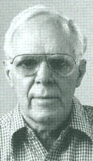
<br><b><font face="Arial,Helvetica"><font size=-1>Martin Gardner, author
of <i>How Not To Test a Psychic, Fads and Fallacies&nbsp;</i></font></font></b>
<br><b><font face="Arial,Helvetica"><font size=-1><i>in theName of Science</i>,
and other skeptical books (courtesy Martin Gardner)</font></font></b>
<br>&nbsp;
<p><font face="Arial,Helvetica">Bill Delmore&nbsp;</font></center>

<p><font face="Arial,Helvetica">In a study with an exceptional subject,
Bill Delmore, confidence calls were made using a deck of ordinary playing
cards as the target. The technique used was a "psychic shuffle" in which
the experimenters randomly select a predetermined order which the subject
must match by shuffling the target deck. In each of two shuffle series,
with fifty-two cards in a series, Delmore made twenty-five confidence calls
-- all of which were completely correct. The probability of such success
is only one in 5250. Other studies with Delmore have also produced extraordinary
results.</font>
<p><font face="Arial,Helvetica">Delmore does not seem to use an altered
state of consciousness as a means of gaining psychic information. In fact,
the research in altered states seems to point to other variables which
are really more significant. For Delmore, a congenial atmosphere is important.</font>
<p><font face="Arial,Helvetica">Skeptical statistician Persi Diaconis,
who observed some informal tests with Delmore which amazed a group of Harvard
faculty and students, hypothesized that the results were due to a set of
complicated maneuvers that would be familiar to magical practitioners.&nbsp;</font>
<br>&nbsp;
<br>&nbsp;
<br>
<br>
<center>
<p><font face="Arial,Helvetica">Uri Geller</font></center>

<p><font face="Arial,Helvetica">In 1974, Harold Puthoff and Russell Targ
at SRI International (then Stanford Research Institute) in Menlo Park,
California, reported on experiments conducted with the Israeli psychic
performer Uri Geller. Their results, covered studies taking place over
an eighteen month period:</font>
<center>
<p>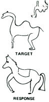</center>

<blockquote><font face="Arial,Helvetica">In the experiments with [Uri]
Geller, he was asked to reproduce 13 drawings over a week-long period while
physically separated from his experimenters in a shielded room. Geller
was not told who made any drawing, who selected it for him to reproduce
or about its method of selection.</font></blockquote>

<center>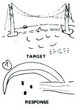</center>

<p><br>
<br>
<br>
<p><font face="Arial,Helvetica">The researchers said that only after Geller's
isolation -- in a double-walled steel room that was acoustically, visually
and electrically shielded from them -- was a target picture randomly chosen
and drawn. It was never discussed by the experimenters after being drawn
or brought near Geller.</font>
<center>
<p>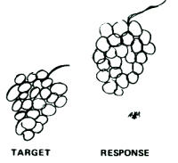</center>

<p><font face="Arial,Helvetica">All but two of the experiments conducted
with Geller were in the shielded room, with the drawings in adjacent rooms
ranging from four meters to 475 meters from him. In other experiments,
the drawings were made inside the shielded room with Geller in adjacent
locations. Examples of drawings Geller was asked to reproduce included
a firecracker, a cluster of grapes, a devil, a horse, the solar system,
a tree and an envelope.&nbsp;</font>
<center>
<p>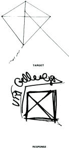</center>

<p><font face="Arial,Helvetica">Two researchers -- not otherwise associated
with this research -- were given Geller's reproductions for judging on
a "blind" basis. They matched the target data to the response data with
no errors, a chance probability of better than one in a million per judgment....</font>
<p><font face="Arial,Helvetica">In another experiment with Geller, he was
asked to "guess" the face of a die shaken in a closed steel box. The box
was vigorously shaken by one of the experimenters and placed on a table.
The position of the die was not known to the researchers.</font>
<p><font face="Arial,Helvetica">Geller provided the correct answer eight
times, the researchers said. The experiment was performed ten times but
Geller declined to respond two times, saying his perception was not clear.</font>
<p><font face="Arial,Helvetica">Because of the publicity which these studies
received, they have been highly criticized by skeptics. These criticisms
are largely speculations as to how Geller might have cheated. The SRI researchers
have responded by maintaining that the experimental conditions were such
that the alleged cheating could not have taken place. Nevertheless, psi
researchers in general are reluctant to defend Geller.</font>
<br>&nbsp;
<p><b><font face="Arial,Helvetica">Ganzfeld Research</font></b>
<p><font face="Arial,Helvetica">A very thoughtful approach toward investigating
ESP was reported in 1974 simultaneously by investigators in New York and
Texas., These researchers hypothesized that the reasons why high scoring
occurred in altered states (e.g., the Maimonides Hospital ESP dream research)
was that the normal, waking mind was less active at these times; thus there
was less mental "noise" covering up the signals coming through the subliminal
mind. To test this theory, they utilized a ganzfeld technique of covering
the eyes of their subjects with halved ping pong balls so that the visual
field was seen as solid white. A constant auditory environment was provided
by either a white noise generator or a tape of the seashore. Under these
conditions, with a constant sensory input, psi signals were expected to
be easier to perceive. Subjects were put into this condition and asked
to free-associate out loud while their responses were put on to magnetic
tape. In another room, the telepathic sender chose, at random, a set of
slides to look at and try to send to the subject. After the experiment,
the subject was asked to guess which of the view-master reels, of a group
of four, had been the target. The subject's taped responses were also independently
judged. The qualitative results of this procedure were often striking and
statistical results also proved impressive.&nbsp;</font>
<p><font face="Arial,Helvetica">In 1985, a meta-analysis of 28 psi Ganzfeld
studies by investigators in ten different laboratories found a combined
z score of 6.6, a result associated with a probability of less than one
part in a billion. Independently significant outcomes were reported by
six of the ten investigators, and the overall significance was not dependent
on the work of any one or two investigators. Moreover, in order to account
for the observed experimental results on the basis of selective reporting,
it would have been necessary to assume that there were more than 400 unreported
studies averaging chance results. Part of this problem was addressed by
British psychologist Susan Blackmore's survey of unreported ganzfeld studies.
Seven of these 19 studies (37%) yielded statistically significant results.
This proportion was not appreciably lower than the proportion of published
studies found significant.&nbsp;</font>
<p><font face="Arial,Helvetica">In evaluating the ganzfeld database, Harvard
psychologists Monica Harris and Robert Rosenthal compared it in quality
to research in biofeedback. This is not to say, however, that the studies
were flawless. Several critics found methodological problems with these
studies.,, In fact, for every ganzfeld study reporting significant evidence
of psi communication, there has been at least one critical review or commentary.</font>
<p><font face="Arial,Helvetica">By their nature, ESP studies must eliminate
opportunities for sensory cueing. An exception occurred in some ganzfeld
studies when the subject was asked to choose which target picture had been
"sent" by another person or agent. When slides held originally by the sender
were shown to the receiver, finger smudges or other marks could theoretically
have served as cues. Honorton has shown, however, that ganzfeld studies
which eliminated this type of cue yielded at least as many significant
psi effects as the studies with poorer controls.</font>
<p><font face="Arial,Helvetica">In response to the various criticisms which
had been addressed to the ganzfeld studies, Honorton and seven associates
reported on a series of eleven new experiments at the 1989 convention of
the Parapsychological Association. These studies were conducted using an
automated testing system which controled random target selection, target
presentation, the blind-judging procedure, and data recording and storage.
Targets were recorded on videotape and included both video segments (dynamic
targets) and single images (static targets). In all, 243 volunteer receivers
completed 358 psi ganzfeld sessions. The success rate for correct identification
of remotely viewed targets was statistically highly significant. The likelihood
that these results could have been obtained by chance was less than one
in ten thousand. The results were consistent across the eleven series with
eight different experimenters.&nbsp;</font>
<p><font face="Arial,Helvetica">A number of other interesting correlations
were noted. The success rate for sessions using dynamic targets was significantly
greater than those with static targets and accounted for most of the successful
scoring. Significantly stronger performance occurred with sender/receiver
pairs who were acquainted than with unacquainted sender/receiver pairs.
Furthermore, comparison of the outcomes of these eleven automated ganzfeld
studies with a meta-analysis of the original 28 direct hits ganzfeld studies
indicated that the two sets were consistent on four dimensions: (1) overall
success rate, (2) impact of dynamic and static targets, (3) effect of sender/receiver
acquaintance, and (4) impact of prior ganzfeld experience.&nbsp;</font>
<p><font face="Arial,Helvetica">This new series of eleven ganzfeld studies
provides a model for psi research in that it combined exacting methodological
rigor with a consideration of the humanistic considerations essential for
psi performance. Participants were all informed that they were free to
bring a friend or family member to serve as their sender. Additionally,
the researchers encouraged participants to reschedule their session rather
than feel they must come in to "fulfill an obligation" if they were not
feeling well or were experiencing personal problems.</font>
<p><font face="Arial,Helvetica">Researchers greeted participants at the
door when they arrive for their session and attempted to create a friendly,
informal social atmosphere. They offered coffee, tea, or soft drinks. The
experimenter and other staff members engaged the participant in conversation
during this period. If the session involved a laboratory sender, time was
taken for the sender and participant to become acquainted. The experimental
protocols included many other details to help subjects feel comfortable
using psi faculties.</font>
<p><font face="Arial,Helvetica">The possibility of sensory cueing was eliminated
by the use of the automated target selection system. Both sender and receiver
were kept in separate sound attentuated chambers during each experiment.
Only the sender was aware of the target's identity. The use of a videotape
display system prevented potential cues that might result from manual handling
of target pictures. Dozens of details in the experimental protocols addressed
every criticism which has been made of the experimental procedures. All
electronic circuits, for example, were carefully monitored to exclude the
possibility of even subliminal sensory leakage. All of the data from every
test with every subject was reported using statistical tests which were
specified in advance.</font>
<p><font face="Arial,Helvetica">The use of a large number of subjects and
the significance of the outcome using subjects as the unit of analysis,
rules out subject deception as a plausible explanation. The automated protocol
had been examined by several dozen psi and behavioral researchers, including
two well-known critics of psi research. Some participated as subjects,
senders, or observers, and all expressed satisfaction with the handling
of security issues and controls.</font>
<p><font face="Arial,Helvetica">In addition, two experts on the simulation
of psi ability have examined the system and protocol. Ford Kross has been
a professional mentalist for over 20 years. He is the author of more than
100 articles in mentalist periodicals, and has served as Secretary/Treasurer
of the Psychic Entertainers Association. Mr. Kross has stated:&nbsp;</font>
<p><font face="Arial,Helvetica">"In my professional capacity as a mentalist,
I have reviewed Psychophysical Research Laboratories' automated ganzfeld
system and found it to provide excellent security against deception by
subjects."&nbsp;</font>
<p><font face="Arial,Helvetica">Similar comments were made by Daryl Bem,
Professor of Psychology at Cornell University. Professor Bem is well-known
for the development of self-perception theory in social and personality
psychology. He is also a member of the Psychic Entertainers Association
and has performed for many years as a mentalist. He visited PRL for several
days and was a subject in one series. In a book review of Advances in Parapsychology,
Vol. 5 published in Contemporary Psychology, Bem made the following statement
about the Honorton-Hyman debate over the psi ganzfeld studies:</font>
<blockquote><font face="Arial,Helvetica">For what it's worth, I find Honorton's
conclusion that there is a significant and nonartifactual effect in the
Ganzfeld data more persuasive than Hyman's more pessimistic conclusion.
Apparently parapsychological data will remain a projective test for all
of us.</font></blockquote>
<font face="Arial,Helvetica">The researchers claim that analysis has shown,
contrary to the assertions of certain critics, that the ganzfeld psi effect
exhibits "consistent and lawful patterns of covariation found in other
areas of inquiry." The automated ganzfeld studies display the same patterns
of relationships between psi performance and target type, sender/receiver
acquaintance, and prior testing experience found in the earlier ganzfeld
studies and the magnitude of these relationships is consistent across the
two data sets. The impact of target type and sender/receiver acquaintance
is also consistent with trends in spontaneous case studies, linking ostensible
psi experiences to emotionally-significant events and persons.</font>
<p><font face="Arial,Helvetica">Skeptic Ray Hyman and psi researcher Charles
Honorton stated in a joint communique regarding the status of the ganzfeld
studies:</font>
<br>&nbsp;
<blockquote><font face="Arial,Helvetica">...the best way to resolve the
controversy...is to await the outcome of future ganzfeld experiments. These
experiments, ideally, will be carried out in such a way as to circumvent
the file-drawer problem, problems of multiple analysis, and the various
defects in randomization, statistical application, and documentation pointed
out by Hyman. If a variety of...investigators continue to obtain significant
results under these conditions, then the existence of a genuine communications
anomaly will have been demonstrated.&nbsp;</font></blockquote>
<font face="Arial,Helvetica">The researchers claim they have presented
a series of experiments that satisfy these guidelines. No single investigator
or laboratory can satisfy the reuqirement of independent replication but
the automated ganzfeld outcomes are quite consistent with the earlier psi
ganzfeld studies and the psi researchers believe the burden of proof is
on the critics to show why these findings should not be accepted.</font>
<p><font face="Arial,Helvetica">The automated ganzfeld studies show an
overall success rate slightly in excess of 34%. A power analysis by University
of California statistician Jessica Utts shows that for an effect this size,
the investigator has only about one chance in three of obtaining a statistically
significant result in an experiment with 50 trials. Even with 100 trials,
which is unusually large in ganzfeld research, the probability of a significant
outcome is only about .5.&nbsp;</font>
<br>&nbsp;
<p><b><font face="Arial,Helvetica">The Experimenter Effect</font></b>
<p><font face="Arial,Helvetica">For some time psi researchers have been
suggesting that the failure of some investigators to repIicate their findings
was due to attitudes and expectations, conscious or unconscious, which
were communicated through subtle sensory or psychic channels to their subjects.
A number of psi research projects have been designed to study on the factors
that Harris and Rosenthal identified as contributing to the experimenter
expectancy effect.&nbsp;</font>
<p><font face="Arial,Helvetica">For example, one project compared the effects
of a warm and cold social climate on ESP scores. All of the subjects had
the same instructions and the same long ESP task. For half, there was a
friendly, informal conversation with the experimenter for a quarter of
an hour before the orientation began, and the experimenter made encouraging
remarks during the breaks. The other half were treated formally and rather
abruptly. The experimenter began the orientation immediately and also made
discouraging remarks during the breaks. Results clearly confirmed the hypothesis.
ESP scores of subjects treated warmly were significantly higher than mean
chance expectation; scores of subjects treated coldly were significantly
below mean chance expectation.</font>
<p><font face="Arial,Helvetica">Judith Taddonio followed Rosenthal's classic
expectancy effects design in an experiment with two series. Her experimenters
were six undergraduates with previous practice in conducting psychological
experiments. All felt neutral toward ESP but agreed to help her when she
told them that a particular ESP method needed checking out. Three were
told that prior findings with this method could not fail. The other three
were told that Taddonio's colleagues were worried because the method seemed
to elicit only psi-missing. All experimenters used the same materials and
method.</font>
<p><font face="Arial,Helvetica">Both in the first series and in the second,
subjects of experimenters with high expectations made ESP scores above
chance and subjects of experimenters with low expectations made ESP scores
below chance. In each series, the difference was significant.</font>
<p><font face="Arial,Helvetica">A study conducted at the University of
Edinburgh in Scotland suggests that the attitude of the exerimenter regarding
the existence of ESP correlates the results of that person's research.
Ironically, one of psi researcher's least successful experimenters is from
the University of Edinburgh, psychologist John Beloff.</font>
<center>
<p>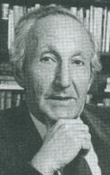
<br><b><font face="Arial,Helvetica"><font size=-1>John Beloff</font></font></b></center>

<p><font face="Arial,Helvetica">Beloff is a respected researcher who has
consistently failed to confirm several psi experiments that have done well
elsewhere.,, Yet, in spite of his inability to confirm psi studies in his
own laboratory, Beloff has remained convinced of the legitimacy of the
research conducted by others. If he is a psi-inhibatory experimenter, it
is not likely that his belief system is the inhibiting factor.</font>
<p><font face="Arial,Helvetica">In 1988, psychologist Gertrude R. Schmeidler
conducted an analysis of psi research studies testing for expectancy effects.
Her conclusions were:</font>
<blockquote><font face="Arial,Helvetica">Psychological research on the
experimenter effect has shown higher scores with a warm than with a cold
experimenter climate and with an experimenter who expects high rather than
low scores. Eight experiments, comprising 12 series, tested for the experimenter
effect in psi. Nine of the 12 series had significant results, all in the
predicted direction. Six other experiments tested a related hypothesis:
that psi experimenters would be self-consistent in obtaining results like
their prior ones. Four of these had significant results, all in the predicted
direction.&nbsp;</font></blockquote>
<font face="Arial,Helvetica">Of course, effects of this sort have long
been recognized in psychology, where they have been attributed to the desire
of subjects to fulfill the expectations of the experimenters. Psychologists
usually guard against this type of "artifact" by designing double blind
studies in which the experimenters are kept unaware of which subjects are
in the test and control groups.</font>
<p><font face="Arial,Helvetica">However, the psi experimenter effect actually
has revolutionary implications for normal psychological research. The following
study was reported by Professor Hans KreitIer and Dr. Shulamith Kreitler
of the Department of Psychology at Tel Aviv University in Israel:</font>
<blockquote><font face="Arial,Helvetica">The first experiment dealt with
the effect of ESP on the identification of letters projected at subliminal
speed and illumination. The second experiment dealt with the effect of
ESP on the direction of perceived autokinetic motion (i.e., of a stationary
point of light in a dark room). The third experiment dealt with the effect
of ESP on the occurrence of specific words and themes in the stories subjects
tell to TAT (Thematic Apperception Test) cards.</font>
<p><font face="Arial,Helvetica">In all these three experiments the subjects
did not know that ESP communications were "sent" to them, the "senders"
never met the subjects and "senders" were naive in the sense that they
were not particularly interested in parapsychology, were unselected, and
did not get any training for the experiments. The precautions undertaken
against any sensory contact between "senders" and subjects were highly
complex and included the spatial separation of "sender" and subject (they
were in two different soundproof rooms with another room between them),
the decentralization of information about the experiment among different
people, strict randomization of all stimuli and sequences, the use of experimenters
who were disbelievers in ESP, etc.</font>
<p><font face="Arial,Helvetica">The results show that in every experiment
there was a significant effect due to the ESP communication....The effect...was
particularly pronounced with regard to responses with an initially low
probability of occurrence.</font></blockquote>
<font face="Arial,Helvetica">Ironically, while scientists in many other
fields question the reliability of experiments in psi research, it may
well be that psi effects underlie many controversial studies in other areas
of science which have proved difficult to repeat -- for example, physicists'
attempts to measure gravity waves.</font>
<br>&nbsp;
<p><b><font face="Arial,Helvetica">The Sheep-Goat Effect</font></b>
<p><font face="Arial,Helvetica">The hypothesis that the attitude the experimenter
takes can effect ESP scores also applies to ESP subject attitudes. Dr.
Gertrude Schmeidler, working at Harvard University and at the City College
of New York, divided her subjects into "sheep" who believed that ESP might
occur in their experiment and "goats" who did not.</font>
<center>
<p>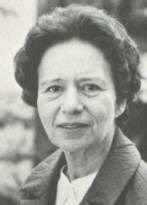
<br><b><font face="Arial,Helvetica"><font size=-1>Gertrude Schmeidler</font></font></b></center>

<p><font face="Arial,Helvetica">Her studies, which were conducted over
a nine year period and have since been replicated, showed an unquestionable
difference between the "sheep" whose scores fell above chance expectation
and "goats" who scored below chance levels. The phenomenon of psi-missing
is thought to be a psychological effect in which psychic material is repressed
from consciousness.</font>
<p><font face="Arial,Helvetica">In a review of 17 experiments testing the
hypothesis that subjects who believed in ESP would show superior ESP performance
compared to subjects who did not believe in ESP, psychologist John Palmer
found that the predicted pattern occurred in 76% of the experiments, and
all six of the experiments with individually significant outcomes were
in the predicted direction. These findings suggest an overall statistical
significance for this effect.</font>
<p><font face="Arial,Helvetica">It is important to realize, however, that
the sheep-goat studies do not necessarily distinguish those who believe
in ESP from those who do not. In most studies, the "sheep" were not "true
believers"; they merely accepted the possibility that ESP could occur in
the test situation. On the other hand, many of the "goats" were willing
to accept that ESP could occur between people who loved each other, or
in certain times of crisis; but they rejected all possibility that ESP
would manifest for them in their particular test situation.</font>
<br>&nbsp;
<p><b><font face="Arial,Helvetica">Psi-Missing</font></b>
<p><font face="Arial,Helvetica">One would expect that if a person had ESP
the level of performance on an experimental ESP test should be higher than
chance expectation. Some individuals (and some groups in specific experiments)
on the other hand have been found to score significantly below chance.
This is termed psi-missing. It is important to note that this does not
necessarily indicate a lack of ES since that would be associated with nonsignificant
scores. Rather, psi-missing can be viewed as an expression of psi in a
way that produces a result different from one's conscious intent. The percipient
shows sensitivity to the targets' identity but tends to make calls at odds
with this sensitivity.</font>
<p><font face="Arial,Helvetica">Psi-missing is thought to be in part a
consequence of negative elements in mood and attitude or aspects of personalty;
these elements may cause psi-missers to focus their ESP inaccurately. While
observations of psi-missing are much less common than those of psi-hitting,
the former are sufficient numerous to suggest there is an effect here to
be explained.</font>
<p><font face="Arial,Helvetica">Critics argue that the occurrence of so-called
psi-missing confirms their view of reported data as statistical freaks.
These below-chance scores are seen as nothing else than the negative tail
of the normal distribution of random guessing scores. Two points count
against this interpretation. First, under this "normal curve" model the
incidence of psi-missing data should be the same as that of psi-hitting
results, yet in fact the former is much lower than the latter. Second,
the occurrence of psi-missing seems to be correlated with certain psychological
variables; this should not be the case if properly controlled ESP tests
entail purely random guessing.</font>
<br>&nbsp;
<p><b><font face="Arial,Helvetica">ESP and Personality Traits</font></b>
<p><font face="Arial,Helvetica">Beginning in the early 1940s numerous attempts
have been made to correlate experimental ESP performance with individual
differences in subjects' personality and attitudinal characteristics. A
series of studies with high school students in India by B. K. Kanthamani
and K. Ramakrishna Rao has given further insight into the personality traits
associated with psi-hitters and psi-missers.&nbsp;</font>
<center>
<p>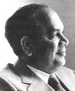
<br><b><font face="Arial,Helvetica"><font size=-1>K. Ramakrishna Rao</font></font></b></center>

<p><font face="Arial,Helvetica">The following adjectives summarize the
results of their work.</font>
<br>&nbsp;
<center><table BORDER COLS=2 WIDTH="80%" >
<tr>
<td><font face="Arial,Helvetica">Positive ESP Scores</font></td>

<td><font face="Arial,Helvetica">Negative ESP Scores</font></td>
</tr>

<tr>
<td><font face="Arial,Helvetica">warm, sociable</font>
<br><font face="Arial,Helvetica">good natured, easy going</font>
<br><font face="Arial,Helvetica">assertive, self-assured</font>
<br><font face="Arial,Helvetica">tough</font>
<br><font face="Arial,Helvetica">enthusiastic</font>
<br><font face="Arial,Helvetica">talkative</font>
<br><font face="Arial,Helvetica">cheerful</font>
<br><font face="Arial,Helvetica">quick, alert</font>
<br><font face="Arial,Helvetica">adventuresome, impulsive</font>
<br><font face="Arial,Helvetica">emotional</font>
<br><font face="Arial,Helvetica">carefree</font>
<br><font face="Arial,Helvetica">realistic, practical</font>
<br><font face="Arial,Helvetica">relaxed</font>
<br><font face="Arial,Helvetica">composed</font></td>

<td><font face="Arial,Helvetica">tense</font>
<br><font face="Arial,Helvetica">excitable</font>
<br><font face="Arial,Helvetica">frustrated</font>
<br><font face="Arial,Helvetica">demanding</font>
<br><font face="Arial,Helvetica">impatient</font>
<br><font face="Arial,Helvetica">dependent</font>
<br><font face="Arial,Helvetica">sensitive</font>
<br><font face="Arial,Helvetica">timid</font>
<br><font face="Arial,Helvetica">threat-sensitive</font>
<br><font face="Arial,Helvetica">shy</font>
<br><font face="Arial,Helvetica">withdrawn</font>
<br><font face="Arial,Helvetica">submissive</font>
<br><font face="Arial,Helvetica">suspicious</font>
<br><font face="Arial,Helvetica">depression prone</font></td>
</tr>
</table></center>

<p><font face="Arial,Helvetica">These particular traits are not suprising,
in that people who frustrate themselves in the course of their other affairs
are quite likely to behave the same way with regard to psi. It is much
harder to define the personality of someone who expresses no ESP ability
and whose scores will always approximate chance. For example, many people
who indicate a fair amount of spontaneous ESP experience, and even professional
psychics (whom I would assume have at least some ability) often do not
score well in a laboratory.&nbsp;</font>
<br>&nbsp;
<p><b><font face="Arial,Helvetica">Extraversion/Introversion</font></b>
<p><font face="Arial,Helvetica">Extraversion is a personality type in which
one's interests are directed outward to the world and to other people.
This is contrasted with introversion in which one's interests are more
withdrawn and directed toward the inner world of thoughts and feelings.</font>
<p><font face="Arial,Helvetica">Gertrude Schmeidler, building on earlier
studies by John Palmer and Carl Sargent, reviewed 38 experiments involving
the relationship between ESP performance and standard psychometric measures
of introversion/extroversion, found that extraverts scored higher than
introverts in 77% of these experiments. In twelve of these studies, the
difference between introverts and extraverts was statistically significant.,</font>
<br>&nbsp;
<p><b><font face="Arial,Helvetica">Effects of Different ESP Targets</font></b>
<p><font face="Arial,Helvetica">Robert L. Morris who holds the Arthur Koestler
Chair of Parapsychology at the University of Edinburgh in Scotland has
proposed that each target be viewed as having both physical and psychological
characteristics.</font>
<center>
<p>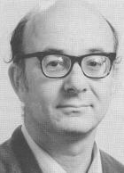
<br><b><font face="Arial,Helvetica"><font size=-1>Robert L. Morris</font></font></b></center>

<p><font face="Arial,Helvetica">The psychological characteristics seem
to be more salient for psi research subjects than the physical. Morris
has also suggested that researchers consider not only the targets themselves,
but also the systems to determining and displaying the targets.</font>
<p><font face="Arial,Helvetica">The nature of the test situation and the
target material itself is likely to affect ESP scores. Some people prefer
material which involves other human beings on a feeling level. Other subjects
who do well with ESP cards show little psychic skill outside of the laboratory.
The technical name for scoring well on some kind of targets and not on
others is the differential effect and seems to follow a trend relating
to emotional preferences, attitudes, and needs.</font>
<p><font face="Arial,Helvetica">For example, in a test conducted by Jim
Carpenter at the University of North Carolina, Chapel Hill, with male college
students unknown to the subjects, some of the ESP cards had sexually arousing
pictures drawn on them. The subjects showed a greater ability at guessing
the ESP symbols on these cards than on the regular cards. In another study
with a female patient in psychotherapy, an ESP test was given using words
which were emotionally potent for her. Half of them were of a traumatic
nature and half of them were of a pleasant nature. In this test, she showed
psi-missing for the traumatic words and psi-hitting on the emotionally-positive
targets. This test was conducted by Martin Johnson at Lund University in
Sweden.</font>
<br>&nbsp;
<p><b><font face="Arial,Helvetica">Psi Mediated Instrumental Response</font></b>
<p><font face="Arial,Helvetica">One of the most ingenious theories regarding
the role of psi in everyday life was developed by Rex Stanford, who is
currently teaching in the psychology department of St. John's University
in Jamaica, New York.&nbsp;</font>
<center>
<p>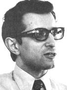
<br><b><font face="Arial,Helvetica"><font size=-1>Rex Stanford</font></font></b></center>

<p><font face="Arial,Helvetica">Stanford developed the concept of the psi-mediated
instrumental response (PMIR) to explain non-intentional psychic experiences.
For example, there is the story about a retired army colonel who found
himself unconsciously getting off of the subway in New York at the wrong
exit and then running into the very people he was intending to visit. Is
it possible that his response of getting off the subway was triggered by
ESP?</font>
<p><font face="Arial,Helvetica">To test this hypothesis, experiments were
designed to see if subjects would use ESP in a situation in which they
would be rewarded for it, although they did not know they were being tested.
In one such experiment, students in a psychology class were given an essay-type
exam with the answers to half the questions sealed in opaque envelopes
which were handed to them with the exam. They were told that the envelope
contained carbon paper which would make copies of their answers. The experimenters
thought that the students would use ESP as well as other means in order
to do well on the examination. In fact, the students did better on the
questions which were answered in the sealed envelopes. Furthermore, in
a study where sealed answers were incorrect, the students did poorer on
the corresponding questions. This study was conducted by Martin Johnson
at Lund University in Sweden.</font>
<p><font face="Arial,Helvetica">Another study has indicated that subjects
who use the PMIR to avoid unpleasant situations and to encounter favorable
situations, also score better than average on tests of conscious ESP.</font>
<p><font face="Arial,Helvetica">The PMIR model and research program have
not been addressed by outside critics. However, Stanford himself has abandoned
the model because he found its "psychobiological" or cybernetic assumptions
to be untenable. Other psi researchers, such as John Palmer, feel that
the PMIR model need not be abandoned, although modifications are necessary.</font>
<br>&nbsp;
<p><b><font face="Arial,Helvetica">Stanford's Conformance Behavior Model</font></b>
<p><font face="Arial,Helvetica">Stanford calls his new approach the "conformance
behavior" model of psi. He challenges the "psychobiological" or "cybernetic"
assumptions of PMIR, which assume that psi abilities are similar to other
sensory-motor functions. Stanford questions whether ESP is analogous to
normal perceptual or cognitive processes, since it occasionally manifests
itself through unconscious motor behavior (such as when one misses a subway
train and then encounters the person one is going to see in the first place).
For this reason, Stanford sees psi as "dispositional" in character. He
no longer assumes any communication of information across a channel.</font>
<p><font face="Arial,Helvetica">As further support for his view, Stanford
cites evidence that psi success is independent of task complexity. If psi
were akin to normal sensory-motor skills, Stanford argues, one would expect
deterioration in psi performance when doing a multicomponent task.&nbsp;</font>
<p><font face="Arial,Helvetica">As evidence of the complexity independence
of ESP, Stanford cites a 1940 study showing no deterioration in performance
when a subject had to integrate information from two extrasensorily perceived
targets from that obtained when the information was contained on a single
target. Had the subject been cheating, and thus relying on normal senses,
one could anticipate deteriorating performance in the more complp task.</font>
<p><font face="Arial,Helvetica">Stanford interprets psi events as the conformance
behavior of "random event generators" (such as quantum mechanical REGs
or human brains) to the needs of a "disposed system" (typically, the subject
in a psi experiment, or the agent or percipient in a spontaneous case).
In order for such conformance behavior to occur, the REG must produce events
that are "unequally attractive" to the disposed system. Further, labile
systems characterized by a great deal of random fluctuation should produce
more conformance behavior than more deterministic systems.</font>
<br><font face="Arial,Helvetica">In principle, the concept of conformance
behavior, does away with the distinction between ESP and PK. As some support
for this view, it is interesting to note that studies have shown no decrease
in PK success when the PK target is a complex, multi-process REG as opposed
to a simple, single-process REG. However, we are getting ahead of our story.</font>
<br>&nbsp;
<p><b><font face="Arial,Helvetica">Precognition</font></b>
<p><font face="Arial,Helvetica">ESP is generally divided into telepathy,
i.e., extrasensory communication between two minds; clairvoyance, i.e.,
extrasensory perception at a distance, without the mediation of another
mind; and precognition, which is ESP across time into the future. There
is still some controversy as to whether telepathy actually exists, or whether
it is simply another form of clairvoyance. However, precognition, a most
unusual ability in terms of our conventional notions of time and free will,
is a rather well-established ESP phenomenon. In fact precognition tests
afford some of the best evidence for ESP, since sensory leakage from a
target which has not yet been determined is impossible. For example, in
early studies with Hubert Pearce, the subject was able to guess what the
order of cards in a pack would be after it was shuffled at the same high
rate of scoring (up to 50% above chance levels) as in clairvoyance tests.</font>
<p><font face="Arial,Helvetica">While many people tend to reject ESP because
it seems to contradict the classical laws of science, precognition is even
harder to swallow for exactly the opposite reason -- it seems to imply
a completely mechanical, predetermined universe. Ironically, it is this
determinism which violates the sensibilities of twentieth-century science.
In fact, precognition is very difficult to prove; although its alternatives
are not exactly palatable.</font>
<p><font face="Arial,Helvetica">For example in the precognitive card guessing
studies, one might say that the subject psychokinetically caused the order
of the cards to conform to his guesses. Or perhaps, more reasonably, the
experimenter, using his clairvoyance subconsciously, determined the subject's
guesses and (with possible PK influence) shuffled the cards accordingly.
It is impossible for precognitive experiments to rule out the possibility
of contamination by other forms of psychic interaction. The methodological
difficulty in distinguishing different types of extra-sensory transmission
and reception had led researchers to use the more general term psi.</font>
<p><font face="Arial,Helvetica">There is evidence to suggest that precognition
actually does occur -- with all of its ramifications regarding time and
free will. Among the most sophisticated tests for precognition were those
designed by Dr. Helmut Schmidt, a physicist now associated with the Mind
Science Foundation in San Antonio, Texas.</font>
<center>
<p>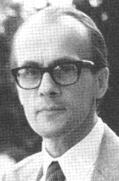
<br><b><font face="Arial,Helvetica"><font size=-1>Helmut Schmidt</font></font></b></center>

<p><font face="Arial,Helvetica">Subjects in his experiments were asked
to predict the lighting of one of four lamps which was determined by theoretically
unpredictable, radioactive decay. Schmidt gives us the following description
of his apparatus:</font>
<blockquote><font face="Arial,Helvetica">The target generator consists
of a radioactive source (strontium 90), a Ceiger counter, and a four-step
electronic switch controlling the four lamps [see illustration]. The strontium
90 delivers electrons randomly at the average rate of ten per second to
the geiger counter. A high frequency pulse generator advances the switch
rapidly through the four positions. When a gate between the-Geiger counter
and the four-step switch is opened, the next electron that reaches the
Geiger counter stops the switch in one of its four positions (whichever
one it happens to be in when the electron registers) and illuminates the
lamp corresponding to that position.</font></blockquote>

<center>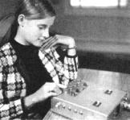
<br><b><font face="Arial,Helvetica"><font size=-1>A subject presses a button
recording a guess on one of the automated&nbsp;</font></font></b>
<br><b><font face="Arial,Helvetica"><font size=-1>testing devices developed
by Helmut Schmidt. There is a probability of&nbsp;</font></font></b>
<br><b><font face="Arial,Helvetica"><font size=-1>1 in 4 that the subject
will score correctly by chance alone.&nbsp;</font></font></b>
<br><b><font face="Arial,Helvetica"><font size=-1>(Courtesy Foundation
for Research on the Nature of Man)</font></font></b></center>

<p><font face="Arial,Helvetica">In precognition experiments, the subject
makes her guess before the apparatus makes its random selection of a target.
The results of these experiments were automatically recorded and the device
was frequently subjected to tests of its true randomness. The instrument
can also be modified for experiments in clairvoyance and psychokinesis.
In all three modes of psi testing with the Schmidt device, significant
results have consistently been obtained.&nbsp; Many other studies also
show precognition.</font>
<p><font face="Arial,Helvetica">Schmidt's studies have come under close
scrutiny by skeptics. In 1981, psychologist C. E. M. Hansel suggested that
Schmidt's experimental designs were not adequate to prevent cheating by
Schmidt himself. Fellow skeptic, psychologist Ray Hyman responded to Hansel's
critique by pointing out that a charge of possible fraud is "a dogmatism
that is immune to falsification." Both points have some merit, and Schmidt
himself has in some subsequent studies (to be covered in the forthcoming
discussion of psychokinesis research) collaborated with other researchers
to minimize the possibility of experimenter fraud. Perhaps the most cogent
critique of Schmidt's research is that randomization checks on the instrumentation
could have been conducted in a manner which more closely simulated actual
experimental conditions. There is no data to suggest that this methodological
weakness actually contributed to artifactually inflated psi scores. There
is also, unfortunately, no way in which such control tests can be designed
to be immune from possible psychic influences!</font>
<p><font face="Arial,Helvetica">In 1989, Charles Honorton and Diane C.
Ferrari reported a meta-analysis of forced-choice precognition experiments
published in the English language between 1935 and 1987. "Forced choice"
experiments are those, such as Schmidt's, in which the ESP percipient is
asked to select among a limited number of choices -- as opposed to "free-response"
experiments in which the percipients' responses are not limited. These
studies involve attempts by subjects to predict the identity of target
stimuli selected randomly over intervals ranging from several hundred milliseconds
following the subject's responses to one year in the future. 309 studies
reported by 62 investigators were analyzed. Nearly 2 million individual
trials were contributed by more than 50,000 subjects. Study outcomes were
assessed in terms of overall level of statistical significance and effect
size. There was a reliable overall effect with chance probability less
than 10-25. Thirty percent of the studies (by 40 investigators) were statistically
significant at the 5% level. A ratio of 46 unreported studies averaging
null results would be required for each reported study in order to reduce
the overall effect to non-significance. No systematic relationship was
found between study outcomes and eight indices of research quality. Effect
size has remained essentially constant over the survey period, while research
quality has improved substantially.&nbsp;</font>
<p><font face="Arial,Helvetica">Four moderating variables were significantly
associated with study outcome: (1) Studies using subjects selected on the
basis of prior testing performance show significantly larger effects than
studies involving unselected subjects. (2) Subjects tested individually
by an experimenter show significantly larger effects than those tested
in groups. (3) Studies in which subjects are given trial-by-trial or run-score
feedback have significantly larger effects than those with delayed or no
subject feedback. (4) Studies with brief intervals between subjects' responses
and target generation show significantly stronger effects than studies
involving longer intervals. The combined impact of these moderating variables
appears to be very strong. A nearly perfect replication rate is observed
in the subset of studies using selected subjects, who are tested individually
and receive trial-by-trial feedback.</font>
<p><font face="Arial,Helvetica">An interesting study comparing real-time
ESP tests with tests of precognition was conducted by Charles T. Tart,
a psychologist at the University of California, Davis.</font>
<center>
<p>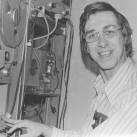
<br><b><font face="Arial,Helvetica"><font size=-1>Charles T. Tart</font></font></b></center>

<p><font face="Arial,Helvetica">Using a measure of information rates, Tart
analyzed 53 studies of present-time ESP and 32 studies of precognitive
ESP -- all of which used a forced-choice test model. A striking and robust
performance difference was found: present-time ESP worked up to 10 times
as well as precogntive ESP in forced-choice tests.&nbsp;</font>
<p><font face="Arial,Helvetica">Tart suggested three possible explanations
for this finding. (1) Real-time ESP may be emotionally more acceptable
than precognition. (2) Perhaps present-time ESP and precognition are two
basically different processes, with inherently different characteristics.
And (3) something about the nature of time itself attenuates ESP performance
that extends into the future.</font>
<p><font face="Arial,Helvetica">A study on a single individual, Malcolm
Bessent, who has a history of success in laboratory precognitive tasks
suggests that that the barriers to precognition may, indeed, be psychological.
Bessent completed 1,000 trials in a computer-based experiment comparing
precognition and real-time target modes. A diode-based electronic number
generator (RNG) served as the target source. Target mode was randomly selected
at the outset of each 10-trial run and was unknown to Bessent until the
completion of each run. Bessent's task was to identify the actual target
from
a judging pool of four graphic "card" images represented on a computer
graphics display.</font>
<p><font face="Arial,Helvetica">Based on Bessent's prior research history,
two formal hypotheses were tested by researcher Charles Honorton: (1) Bessent
would demonstrate statistically significant hitting in the precognitive
target mode, and (2) his precognitive performance would be significantly
superior to his performance on real-time targets. Significance criteria
were specified in advance. Both hypotheses were confirmed. Bessent's success
rate in the precognitive target mode was 30.4%. This is reliably above
the 25% chance level. Real time performance did not exceed chance expectations.</font>
<p><font face="Arial,Helvetica">As is customary in psi research, various
rival hypotheses including sensory cues, faulty randomization, data-handling
errors, data-selection bias, multiple analysis, and deception were assessed.
Honorton found them to be inadequate explanations of the beyond chance
result.</font>
<p><font face="Arial,Helvetica">This was the fourth precognition experiment
with Bessent, each involving a different methodology and each yielding
a statistically significant outcome. The combined result is highly significant
with a chance probability of less than one in a billion.</font>
<p><font face="Arial,Helvetica">An ingenious experiment, designed and conducted
by Dean Radin, using himself as subject, attempted to explore the hypothesis
that precognition entails the ability to see probability wave, to see probable
rather than actual futures.&nbsp;</font>
<p><font face="Arial,Helvetica">Radin designed a computerized Random Event
Generator that would, in effect, change the probabilities of the various
targets with each trial. A conventional precognition hypothesis would suggest
a greater than chance number of hits for the correct target (regardless
of a priori probability). Radin suggested that if precognition involved
probable futures, the incorrect responses might still match the targets
which were given a high a priori probability of being selected by the computer
on a given trial -- even if they were not ultimately selected. This hypothesis
was confirmed.</font>
<p><font face="Arial,Helvetica">How unfortunate that, while the hypothesis
would seem to have enormous ramifications for our understanding of precognition,
there is no known way to distinguish the outcome of Radin's experiment
from the possibility that he simply used his own psi abilities, if they
exist, to confirm his favorite hypothesis.</font>
<p><font face="Arial,Helvetica">One of the most rigorous and successful
series of precognitive studies has been conducted by Brenda Dunne and colleagues
at the Princeton Engineering Anomalies Research program. The Princeton
group used a a free-response, remote-viewing procedure which was developed
by physicists Harold Puthoff and Russell Targ at SRI International (working
in conjunction with research subjects Ingo Swan and Pat Price). 336 experimental
trials have been conducted in which randomly selected targets are not chosen
or visited until the percipient's responses have been recorded.&nbsp;</font>
<p><font face="Arial,Helvetica">The targets are real-life locations that
are actually visited by an experimental agent acting something like a telepathic
sender. The experimental subjects or percipients are asked to report any
and all imagery which comes to them during the testing period. Then percipients
are asked a series of thirty questions about the target which are to be
answered "yes" or "no." These questions include such items as whether the
target was outside, was it man-made, does a single object dominate the
scene, are animals present, is it colorful, are there any loud sounds,
etc. A statistical analysis then compares the subjects responses both to
the actual target and to the descriptor ratings for all the other targets
in the target pool. The results are summarized:</font>
<p><font face="Arial,Helvetica">Effects are found to compound incrementally
over
a large number of experiments, rather than being dominated by a few outstanding
efforts or a few exceptional participants. The yield is statistically insensitive
to the mode of target selection, to the number of percipients addressing
a given target, and, over the ranges tested, to the spatial separation
of the percipient from the target and even to the temporal separation of
the perception effort from the time of target visitation. Overall results
are unlikely by chance to the order of 10-<sup><font size=-2>10</font></sup>.</font>
<br>&nbsp;
<p><br>
<center>
<p><b><font face="Arial,Helvetica">Reference</font></b></center>

<p><font face="Arial,Helvetica">. A survey published in <i>New Scientist</i>,
on January 25, 1973, indicate that 25% of scientists polled considered
extrasensorimotor phenomena "an established fact." Another 42% opted for
"a likely possibility."&nbsp;</font>
<p><font face="Arial,Helvetica">. Harry Price, <i>Fifty Years of Psychical
Research</i>. London: Longmans, Green &amp; Co., 1939, pp. 73-74. Price,
who founded the National Laboratory of Psychical Research in London, was
involved in exposing many fraudulent "psychics."</font>
<p><font face="Arial,Helvetica">. Joseph Banks Rhine, <i>Extra-Sensory
Perception</i>. Boston: Society for Psychical Research, 1933, pp. 73-74.</font>
<p><font face="Arial,Helvetica">. B. H. Camp, [Statement in notes.] <i>Journal
of Parapsychology</i>, 1, 1937, 305.</font>
<p><font face="Arial,Helvetica">. J. Gaither Pratt, James Banks Rhine,
et al., <i>Extra Sensory Perception After Sixty Years</i>. New York: Henry
Holt &amp; Co., 1940. This book was a bible, in its day, for card-guessing
researchers.</font>
<p><font face="Arial,Helvetica">. Rhine and his associates borrowed a German
term and designated their experimental work parapsychology. This was done
both to distinguish it from t`! earlier term psychical research which was
generally a non-experimental field, and to denote an inquiry which was
closely related to psychology.</font>
<p><font face="Arial,Helvetica">. Rhine, <i>Extra-Sensory Perception</i>.</font>
<p><font face="Arial,Helvetica">. George R. Price, "Science and the Supernatural,"
Science, 122, 359-367.</font>
<p><font face="Arial,Helvetica">. C. E. M. Hansel, <i>ESP: A Scientific
Evaluation</i>. New York: Scribner's, 1966.</font>
<p><font face="Arial,Helvetica">. Ian Stevenson, "An Antagonist's View
of Parapsychology. A Review of Professor Hansel's ESP: A Scientific Evaluation,"
<i>Journal
of the American Society for Psychical Research</i>, 61, July 1967, 254-267.
Stevenson points out that Hansel based his conclusions on an inaccurate
diagram of Pratt's office.</font>
<p><font face="Arial,Helvetica">. Betty Marwick, "The Soal-Goldney Experiments
with Basil Shackleton: New Evidence of Manipulation," <i>Proceedings of
the Society for Psychical Research</i>, 56, 211.</font>
<p><font face="Arial,Helvetica">. In the absence of experimental consistency
and theoretical underpinnings, some psychic investigators feel it is premature
to claim that even the best experiments support a psi hypothesis. Perhaps,
in the future, researchers and critics working together will uncover conventional
explanations for the existing data. Therefore they prefer to refer to the
existing data of psi research as anomalies. See John Palmer, "Have We Established
Psi?" <i>Journal of the American Society for Psychical Research</i>, 81,
1987, 111-123; K. Ramakrishna Rao &amp; John Palmer, "The Anomaly Called
Psi: Recent Research and Criticism," <i>Behaviorial and Brain Sciences</i>,
10, 1987, 539-551.</font>
<p><font face="Arial,Helvetica">. E. Douglas Dean, "The Plethysmograph
as an Indicator of ESP," <i>Journal of the Society for Psychical Research</i>,
41, 1962, 351-353.</font>
<p><font face="Arial,Helvetica">. E. Douglas Dean &amp; Carroll B. Nash,
"Plethysmograph Results Under Strict Conditions," <i>Sixth Annual Convention
of the Parapsychological Association</i>, New York, 1963.</font>
<p><font face="Arial,Helvetica">. Charles T. Tart, "Possible Physiological
Correlates of Psi Cognition," <i>International Journal of Parapsychology</i>,
5, 1963, 375-386.</font>
<p><font face="Arial,Helvetica">. Montague Ullman, Stanley Krippner, &amp;
Alan Vaughan, <i>Dream Telepathy</i>. New York: Macmillan, 1973. A valuable
feature of this book is that, as in <i>ESP After Sixty Years</i>, the authors
invited contributions from known critics of their work.</font>
<p><font face="Arial,Helvetica">. Naturally these findings caused some
scientists to echo the thought of Shakespeare that "we are the stuff that
dreams are made of." This notion may eventually take on some rather precise
physical and mathematical coloring, as the Pythagorean tradition finds
renewal mathematical theorists (see Appendix).</font>
<p><font face="Arial,Helvetica">. Stanley Krippner, Charles Honorton &amp;
Montague Ullman, "An Experiment in Dream Telepathy with The Grateful Dead,"
<i>Journal
of the American Society of Psychosomatic Dentistry and Medicine</i>, 20(1),
1973.</font>
<p><font face="Arial,Helvetica">. John Palmer, <i>An Evaluative Report
on the Current Status of Parapsychology</i>. Alexandria, VA: U.S. Army
Research Institute for the Behavioral and Social Sciences, 1985.</font>
<p><font face="Arial,Helvetica">. Irvin L. Child, "Psychology and Anomalous
Observations: The Question of ESP in Dreams," <i>American Psychologist</i>,
40(11), November 1985, 1219-1229.&nbsp;</font>
<p><font face="Arial,Helvetica">. Milan Ryzl, "A Method of Training in
ESP," <i>International Journal of Parapsychology</i>, 8(4), Autumn 1966.</font>
<p><font face="Arial,Helvetica">. Charles Honorton, Significant Factors
in Hypnotically-Induced Clairvoyant Dreams," <i>Journal of The American
Society for Psychical Research</i>, 66(1), January 1972, 86-102.</font>
<p><font face="Arial,Helvetica">. Edward A. Charlesworth, "Psi and the
Imaginary Dream," <i>Seventeenth Annual Convention of the Parapsychological
Association</i>, New York, 1974.</font>
<p><font face="Arial,Helvetica">. Gertrude R. Schmeidler, "High ESP Scores
After a Swami's Brief Instruction in Meditation and Breathing," <i>Journal
of The American Society for Psychical Research</i>, 64(1), January 1970,
101-103.</font>
<p><font face="Arial,Helvetica">. Karlis Osis &amp; Edwin Bokert, "ESP
and Changed States of Consciousness Induced by Meditation," <i>Journal
of The American Society for Psychical Research</i>, 65(1), January 1971,
17-65.</font>
<p><font face="Arial,Helvetica">. Emille Boirac, <i>Our Hidden Forces</i>,
London: Rider, 1918.</font>
<p><font face="Arial,Helvetica">. D. Scott Rogo, <i>Parapsychology: A Century
of lnquiry</i>. New York: Taplinger, 1975, p. 238.</font>
<p><font face="Arial,Helvetica">. Boirac, op. cit.</font>
<p><font face="Arial,Helvetica">. Ibid.</font>
<p><font face="Arial,Helvetica">. Shiela Ostrander &amp; Lynn Schroeder,
<i>Psychic
Discoveries Behind The Iron Curtain</i>, Englewood Cliffs, N.J. Prentice-Hall,
1970. pp. 37-40.</font>
<p><font face="Arial,Helvetica">. Charles Honorton &amp; Stanley Krippner,
"Hypnosis and ESP: A Review of the Experimental Literature," <i>Journal
of The American Society for Psychical Research</i>, 63, 1969, 214-252.</font>
<p><font face="Arial,Helvetica">. Ephriam Schechter, "Hypnotic Induction
vs. Control Conditions: Illustrating an Approach to the Evaluation of Replicability
in Parapsychological Data," <i>Journal of the American Society for Psychical
Research</i>, 78, 1984, pp. 1-27.</font>
<p><font face="Arial,Helvetica">. Ephriam I. Schechter, personal communication,
September 12, 1989.</font>
<p><font face="Arial,Helvetica">. Rex G. Stanford, "Altered Internal States
and Parapsychological Research: Retrospect and Prospect," in D. H. Weiner
&amp; D. I. Radin (eds.), <i>Research in Parapsychology 1985</i>. Metuchen,
NJ: Scarecrow Press, 1986, pp. 128-131.</font>
<p><font face="Arial,Helvetica">. J. Gaither Pratt, <i>ESP Research Today</i>,
Metuchen, NJ: Scarecrow Press, 1973. pp. 84-100.</font>
<p><font face="Arial,Helvetica">. Martin Gardner, <i>How Not to Test a
Psychic</i>. Buffalo, NY: Prometheus, 1989.</font>
<p><font face="Arial,Helvetica">. H. Kanthamani &amp; E. F. Kelly, "Awareness
of Success in an Exceptional Subject," <i>Journal of Parapsychology</i>,
38(4), December 1974, 355-382.</font>
<p><font face="Arial,Helvetica">. Persi Diaconis, "Statistical Problems
in ESP Research," <i>Science</i>, 201, 1978, 131-136.</font>
<p><font face="Arial,Helvetica">. Stanford Research Institute, news release,
October 1974. See also Harold Puthoff &amp; Russell Targ, "Information
Transmission Under Conditions of Sensory Shielding," <i>Nature</i>, October
18, 1974.</font>
<p><font face="Arial,Helvetica">. Martin Gardner, "How Not to Test a Psychic:
The Great SRI Die Mystery," <i>Skeptical Inquirer</i>, VII(2), Winter 1982-83,
33-39.</font>
<p><font face="Arial,Helvetica">. Charles Honorton &amp; James C. Terry,
"Psi-mediated Imagery and Ideation in the Ganzfeld: A Confirmatory Study,"
<i>Seventeenth
Annual Convention of the Parapsychological Association</i>, New York, 1974.</font>
<p><font face="Arial,Helvetica">. Lendell W. Braud &amp; William G. Braud,
"The Psi Conducive Syndrome: Free Response GESP Performance During an Experimental
Hypnagogic State Induced by Visual and Acoustic Ganzfeld Techniques," <i>Parapsychological
Association Convention</i>, New York, 1974.</font>
<p><font face="Arial,Helvetica">. Charles Honorton. "Meta Analysis of Psi
Ganzfeld Research: A Response to Hyman," <i>Journal of Parapsychology</i>,
49, 1985, 51-91.</font>
<p><font face="Arial,Helvetica">. Susan Blackmore, "The Extent of Selective
Reporting of ESP Ganzfeld Studies," <i>European Journal of Parapsychology</i>,
3, 1980, 213-219.</font>
<p><font face="Arial,Helvetica">. Monica J. Harris &amp; Robert Rosenthal,
<i>Interpersonal
Expectancy Effects and Human Performance Research</i>. Washington, DC:
National Academy Press, 1988.</font>
<p><font face="Arial,Helvetica">. Susan Blackmore, "A Report of a Visit
to Carl Sargent's Laboratory," <i>Journal of the Society for Psychical
Research</i>, 54(808), July 1987, 186-198.</font>
<p><font face="Arial,Helvetica">. Adrian Parker &amp; Nils Wiklund, "The
Ganzfeld Experiments: Towards an Assessment," <i>Journal of the Society
for Psychical Research</i>, 54(809), October 1987, 261-265.</font>
<p><font face="Arial,Helvetica">. Ray Hyman, "The Ganzfeld/Psi Experiment:
A Critical Appraisal," <i>Journal of Parapsychology</i>, 49, 1985, 3-49.</font>
<p><font face="Arial,Helvetica">. Charles C. Honorton, Rick E. Berger,
Mario P. Varvoglis, M. Quant, P. Derr, George P. Hansen, Ephriam Schechter,
D. C. Ferrari, "Psi Ganzfeld Experiments using an Automated Testing System:
An Update and Comparison with a Meta-Analysis of Earlier Studies." <i>Proceedings
of Presented Papers, the Parapsychological Association 32nd Annual Convention</i>,
San Diego, August 1989, pp. 93-109.</font>
<p><font face="Arial,Helvetica">. If the participant choose not to bring
a friend, a Psychophysics Research Laboratory staff member served as sender.&nbsp;</font>
<p><font face="Arial,Helvetica">. These courtesies and considerations may
seem either obvious or trivial. Experience suggests, however, that they
should not be taken for granted. The emotional tone is noticably different
where researchers are hostile to the possibility of positive psi results
and are suspicious that subjects will engage in fraud.</font>
<p><font face="Arial,Helvetica">. This statement, cited in Honorton, et
al., 1989 is attributed to correspondence received in May 1989.</font>
<p><font face="Arial,Helvetica">. This quote is cited in a news brief titled
"Psychologist for Psi," in <i>Parapsychology Review</i>, 20(5), September-October
1989, p. 14.</font>
<p><font face="Arial,Helvetica">. National Research Council, <i>Enhancing
Human Performance: Issues, Theories, and Techniques</i>. Washington, DC:National
Academy Press, 1988, p. 175.</font>
<p><font face="Arial,Helvetica">. Ray Hyman &amp; Charles Honorton, "A
Joint Communique: The Psi Ganzfeld Controversy," <i>Journal of Parapsychology</i>,
50, 1984, 353-354.</font>
<p><font face="Arial,Helvetica">. J. Gaither Pratt &amp;#0; M. Price, "The
Experimenter-Subject Relationship in Tests for ESP," <i>Journal of Parapsychology</i>,
1938, 84-94.</font>
<p><font face="Arial,Helvetica">. Charles Honorton, M. Ramsey, &amp; C.
Cabibbo, "Experimenter Effects in Extrasensory Perception," <i>Journal
of the American Society for Psychical Research</i>, 69, 1975, 135-149.&nbsp;</font>
<p><font face="Arial,Helvetica">. Judith L. Taddonio, "The Relationship
of Experimenter Expectancy to Performance on ESP Tasks," <i>Journal of
Parapsychology</i>, 40, 1976, 107-114.&nbsp;</font>
<p><font face="Arial,Helvetica">. Adrian Parker, "A Pilot Study of the
Influence of Experimenter Expectancy on ESP Scores," <i>Parapsychological
Association Convention</i>, New York, 1974.</font>
<p><font face="Arial,Helvetica">. John Beloff &amp; I. Mandelberg, "An
Attempted Validation of the 'Ryzl Technique' for Training ESP Subjects,"
<i>Journal
of the Society for Psychical Research</i>, 43, 1966, 229-249.</font>
<p><font face="Arial,Helvetica">. John Beloff &amp; J. Bate, "An Attempt
to Replicate the Schmidt Findings," <i>Journal of the Society for Psychical
Research</i>, 46, 1971, 21-30.</font>
<p><font face="Arial,Helvetica">. John Beloff, "The 'Sweethearts' Experiment,"
<i>Journal
of the Society for Psychical Research</i>, 45, 1969, 1-7.</font>
<p><font face="Arial,Helvetica">. Gertrude Schmeidler, <i>Parapsychology
and Psychology</i>. Jefferson, NC: McFarland, 1988.</font>
<p><font face="Arial,Helvetica">. H. C. Berendt, "Parapsychology in Israel,"
in Allan Angoff &amp; Betty Shapin (eds.), <i>Parapsychology Today: A Geographic
View</i>. New York: Parapsychology Foundation, 1973. p. 68.</font>
<p><font face="Arial,Helvetica">. Gertrude R. Schmeidler &amp; Robert A.
McConnell, <i>ESP and Personality Patterns</i>. New Haven: Yale University
Press, 1958.</font>
<p><font face="Arial,Helvetica">. John Palmer, "Scoring in ESP Tests as
a Function of Belief in ESP. Part I. The Sheep-Goat Effect," <i>Journal
of The American Society for Psychical Research</i>, 65, 1971, 373-408.</font>
<p><font face="Arial,Helvetica">. John A. Palmer, "Scoring in ESP Tests
as a Function of Belief in ESP. Part I: The Sheep-Goat Effect," <i>Journal
of the American Society for Psychical Research</i>, 65, 1971, 373-408.</font>
<p><font face="Arial,Helvetica">. Gertrude R. Schmeidler, personal communication,
September 18, 1989.</font>
<p><font face="Arial,Helvetica">. J. E. Crandall, "Effects of Favorable
and Unfavorable Conditions on the Psi-Missing Displacement Effect," <i>Journal
of the American Society for Psychical Research</i>, 79, 1985, 27-38.</font>
<p><font face="Arial,Helvetica">. K. Ramakrishna Rao, "The Bidirectionality
of Psi," <i>Journal of Parapsychology</i>, 29, 1965, 230-250.</font>
<p><font face="Arial,Helvetica">. Harvey J. Irwin, <i>An Introduction to
Parapsychology</i>. Jefferson, NC: 1989. This is an introductory text,
suitable for college classes. In particular, see the discussion on "The
Bidirectionality of ESP: Psi-Missing."</font>
<p><font face="Arial,Helvetica">. B. K. Kanthimani &amp; K. R. Rao, "Personality
Characteristics of ESP Subjects," <i>Journal of Parapsychology</i>, 36,
1972, 56-70</font>
<p><font face="Arial,Helvetica">. John A. Palmer. "Attitudes and Personality
Traits in Experimental ESP Research," in B. B. Wolman (ed.), <i>Handbook
of Parapsychology</i>. New York: Van Nostrand Reinhold, 1977, pp. 175-201.</font>
<p><font face="Arial,Helvetica">. Gertrude Schmeidler, <i>Parapsychology
and Psychology</i>. Jefferson, NC: McFarland, 1988.</font>
<p><font face="Arial,Helvetica">. Robert L. Morris, "The Concept of the
Target," in L. A. Henkel &amp; R. E. Berger, <i>Research in Parapsychology
1988</i>. Metuchen, NJ: Scarecrow Press, 1989, pp. 89-91.</font>
<p><font face="Arial,Helvetica">. Martin Johnson, "A New Technique of Testing
ESP in a Real-Life, High Motivational Context," <i>Journal of Parapsychology</i>,
37, 1973, 210-217. This study, however, was not actually designed to test
Stanford's PMIR model.</font>
<p><font face="Arial,Helvetica">. Rex G. Stanford &amp; Gary Thompson,
"Unconscious Psi-mediated Instrumental Response and its Relation to Conscious
ESP Performance," <i>Parapsychological Association Convention</i>, Charlottesville,
Virginia, 1973</font>
<p><font face="Arial,Helvetica">. John Palmer, An Evaluative Report.</font>
<p><font face="Arial,Helvetica">. Rex G. Stanford, "Toward Reinterpreting
Psi Events," <i>Journal of the American Society for Psychical Research</i>,
72, 1978, 197-214.</font>
<p><font face="Arial,Helvetica">. A. A. Foster, "Is ESP Diametric?" <i>Journal
of Parapsychology</i>, 4, 1940, 325-328.</font>
<p><font face="Arial,Helvetica">. This works both ways as many PK experiments
can be interpreted as evidence of precognition.</font>
<p><font face="Arial,Helvetica">. Helmut Schmidt, "A Quantum Process in
Psi Testing," in J. B. Rhine (ed.), <i>Progress in Parapsychology</i>.
Durham, NC: Parapsychology Press, 1973, pp. 28-35.</font>
<p><font face="Arial,Helvetica">. Helmut Schmidt, "A Quantum Mechanical
Random Number Generator for Psi Tests," <i>Journal of Parapsychology</i>,
34, 1970, 219-224.</font>
<p><font face="Arial,Helvetica">. Helmut Schmidt, "Precognition of a Quantum
Process," <i>Journal of Parapsychology</i>, 33, 1969, 99-108.</font>
<p><font face="Arial,Helvetica">. Helmut Schmidt, "PK Tests with a High-Speed
Random Number Generator," <i>Journal of Parapsychology</i>, December 1973,
105-118.</font>
<p><font face="Arial,Helvetica">. C. E. M. Hansel, "Critical Analysis of
Schmidt's PK Experiments," <i>Skeptical Inquirer</i>, V(3), Spring 1981,
26-33.</font>
<p><font face="Arial,Helvetica">. Ray Hyman, "Further Comments on Schmidt's
PK Experiments," <i>Skeptical Inquirer</i>, V(3), Spring 1981, 39.</font>
<p><font face="Arial,Helvetica">. J. E. Alcock, <i>A Comprehensive Review
of Major Empirical Studies in Parapsychology Involving Random Event Generators
or Remote Viewing</i>. Washington, DC: National Academy Press, 1988.</font>
<p><font face="Arial,Helvetica">. Charles Honorton &amp; Diane C. Ferrari,
"Future Telling -- A Meta-Analysis of Forced Choice Precognition Experiments,
1935-1987," <i>Proceedings of Presented Papers, the Parapsychological Association
32nd Annual Convention</i>, San Diego, August 1989, 110-121.</font>
<p><font face="Arial,Helvetica">. Charles T. Tart, "Information Acquisition
Rates in Forced-Choice ESP Experiments: Precognition Does Not Work as Well
as Present-Time ESP," <i>Journal of the American Society for Psychical
Research</i>, 77(4), October 1983, 293-310.</font>
<p><font face="Arial,Helvetica">. Charles Honorton, "Precognition and Real-Time
ESP Performance in a Computer Task with an Exceptional Subject," <i>Journal
of Parapsychology</i>, 51(4), December 1987, 291-320.</font>
<p><font face="Arial,Helvetica">. Dean I. Radin. "Precognition of Probable
Versus Actual Futures: Exploring Futures That Will Never Be," in D. H.
Weiner &amp; R. L. Morris (eds.), <i>Research in Parapsychology 1987</i>.
Metuchen, NJ: Scarecrow Press, 1988, pp. 1-5.</font>
<p><font face="Arial,Helvetica">. Harold E. Puthoff &amp; Russell Targ,
"A Perceptual Channel for Information Transfer over Kilometer Distances:
Historical Perspective and Recent Research," <i>Proceedings of the Institute
of Electrical and Electronics Engineers</i>, 64, 1976, 329-354.</font>
<p><font face="Arial,Helvetica">. Brenda J. Dunne, York H. Dobyns &amp;
S. M. Intner, <i>Precognitive Remote Perception III: Complete Binary Data
Base with Analytical Refinements</i>. Technical Note PEAR 89002. Princeton,
NJ: Princeton University School of Engineering and Applied Sciences, 1989.</font>
<p><font face="Arial,Helvetica">. Ibid., pp. i-ii.</font></td>
</tr>
</table></center>

<center><b><font face="Arial,Helvetica"><font size=-1><a href="http://williamjames.com/" >Return
 </font></font></b>
<br><b><font face="Arial,Helvetica"><font size=-1><a href="http://williamjames.com/" >More
 </font></font></b><font face="Arial,Helvetica"><a href="http://williamjames.com/" ></a></font>
<p><b><font face="Arial,Helvetica"><font size=-1><a href="../index.htm" >Return
to <i>Roots of Consciousness</i> Contents</a></font></font></b></center>

</body>
</html>
